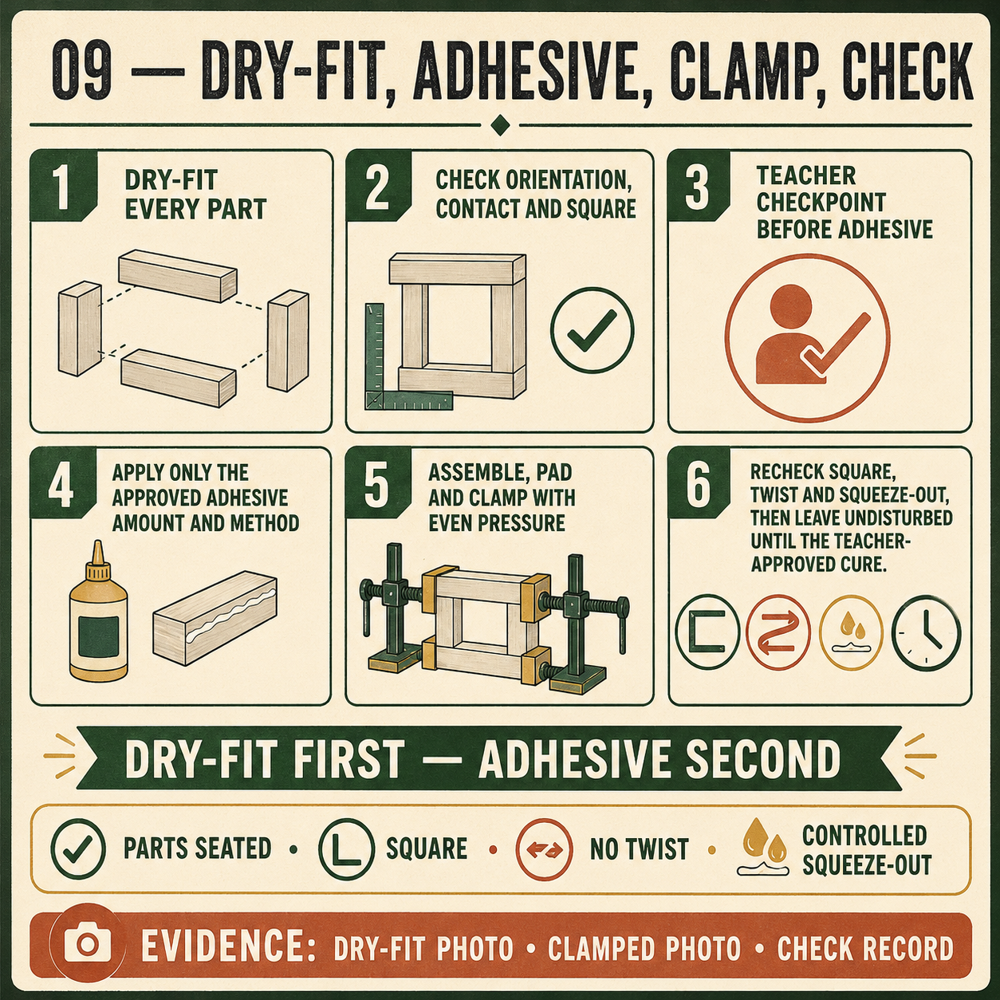

Module presentation
Learn with the slides
Use the presentation to preview Choosing and using an adhesive for assembly, Clamping the Carry-All square and true, Maintaining tools and organising the workspace before working through the theory, videos, checks and written evidence.
Weeks 13-14
This module
Choose the approved adhesive, clamp the structure square and maintain the tools and workspace that support quality.
Your work
Student details
Your entries save automatically in this browser. Use Print / Save PDF before leaving the page.
Theory 1
Choosing and using an adhesive for assembly

Adhesive helps the Carry-All components remain joined after the dry-fit checks are complete. It works across the fitted surfaces of the required rebate-butt corners, housings and other approved assembly areas. Adhesive should support accurately manufactured rebate-and-housing features, not replace them. Components that are badly misaligned, damaged or excessively loose must be corrected through the teacher-approved process before final assembly begins.
The adhesive used for the Carry-All must be approved by the teacher and suitable for the specified pine, plywood and intended project use. Read the product label and Safety Data Sheet before handling it. These sources identify hazards, required controls, personal protective equipment, first-aid information, storage and clean-up requirements. The SWMS and school procedures must also be followed. Do not assume that instructions from another adhesive apply to the selected product.
Open time is the period during which the applied adhesive remains workable enough for assembly and clamping. It is product-specific and may also be affected by conditions identified by the manufacturer. Students must obtain this information from the approved product label, technical information and teacher direction rather than relying on a general workshop rule. The assembly sequence should be planned in advance so the parts can be joined, aligned and clamped within the permitted working period.
- Complete a successful dry assembly before opening the adhesive.
- Organise the components, clamps and approved clean-up materials beforehand.
- Apply a controlled amount to the required joint surfaces.
- Assemble in the planned order and check orientation and alignment.
- Manage squeeze-out using the product-specific, teacher-approved method.
Controlled application means placing enough adhesive on the required surfaces to support a continuous bond without flooding the joint or surrounding timber. Too little may leave areas without adequate contact, while excessive application creates unnecessary squeeze-out, waste and clean-up. Heavy squeeze-out may also spread onto visible surfaces and interfere with later surface preparation or finish quality. The exact application and clean-up method must follow the approved product instructions and teacher demonstration.
Clamping pressure should hold fitted components in their intended position while the adhesive develops strength. It should not be used to force inaccurate joints together or pull a twisted structure into shape. During assembly, recheck corner seating, divider and handle alignment, base location and overall structure. Folio evidence should record the approved product, safety-information check, assembly sequence and one quality check completed before the adhesive was allowed to set.
Theory 2
Clamping the Carry-All square and true
Clamping holds the Carry-All components in their correct positions while the approved adhesive develops strength. Good clamping begins with planning, not pressure. The sides, base, dividers, central handle or handle panel, corner joints, rebates and housings should already have passed a full dry-fit check. Clamps, pads and any teacher-approved cauls should be organised before adhesive is applied so the assembly can be completed calmly and within the product-specific working time.
Clamp pads protect the pine from dents, bruising and marks caused by concentrated pressure. Cauls may be used, when approved by the teacher, to spread pressure across a wider area or help keep components aligned. Clamp positions should support the joints without blocking important checks or causing the structure to lift from the bench. All equipment and methods must follow the teacher demonstration, SWMS and relevant school SOP.
Pressure should be applied gradually and evenly. Tightening one clamp fully before the others can pull the Carry-All out of alignment, bow a side or introduce twist. The aim is to bring correctly fitted joints into full contact and hold them there, not to crush the timber or force inaccurate parts together. Excessive pressure can damage joint edges, squeeze out too much adhesive or distort the structure while making a poor fit harder to identify.
- Prepare clamps, pads and approved cauls before adhesive application.
- Apply pressure progressively and alternate between clamp positions.
- Check that corners remain seated and internal parts stay aligned.
- Compare diagonals or use another teacher-approved squareness check.
- Inspect for bow, twist, rocking and uncontrolled squeeze-out.
Squareness must be checked while the adhesive is still workable. Where appropriate, equal diagonals can indicate that a rectangular assembly is square, but this check should be used with visual inspection and teacher-approved methods. Also confirm that the Carry-All sits evenly, the sides remain straight, the base stays located in its rebates and the dividers and handle panel have not shifted. A structure can have acceptable corners yet still contain bow or twist.
Squeeze-out should be anticipated before clamping begins. Too much can spread across visible surfaces or collect in corners, while too little may indicate incomplete contact. Management and clean-up must follow the approved adhesive instructions and teacher direction. Once alignment is confirmed, the assembly should remain undisturbed for the required product-specific period. Folio evidence should show the clamp arrangement and explain how squareness, pressure and distortion were checked.
Theory 3
Maintaining tools and organising the workspace

Maintaining tools and organising the workspace are part of safe and accurate Carry-All manufacture. Before using any teacher-approved tool, check its general condition and confirm that it appears suitable for the task. Look for obvious damage, loose parts, contamination, worn surfaces or anything unusual. Do not use a tool that appears faulty or unsafe. Stop, isolate it from use as directed and report the problem to the teacher rather than attempting a repair.
Sharp tools require particular care because their edges affect both safety and quality. A damaged, blunt or poorly stored edge may slip, tear timber fibres or make accurate joint work more difficult. Sharp edges should be protected when tools are carried, placed on the bench or returned to storage. Tools should never be dropped into a pile, left hidden under materials or positioned where another person could accidentally contact the cutting edge.
An organised bench reduces mistakes during marking, joint fitting, dry assembly, adhesive application and surface preparation. Keep only the tools and materials needed for the current stage within the work area. The working drawing, components and measuring equipment should remain clean and protected from adhesive, dust and damage. A cluttered bench can hide reference marks, cause parts to be mixed up and increase the chance of knocking a component onto the floor.
- Complete a visual condition check before using each tool.
- Report faults, damage or unusual operation immediately.
- Protect sharp edges and return tools to their correct storage locations.
- Separate useful off-cuts from waste according to workshop procedures.
- Control dust and clear access paths using teacher-approved methods.
Dust, shavings and off-cuts must be managed throughout the project rather than left until the end of the lesson. Waste can create slip hazards, cover layout lines, interfere with workholding and contaminate adhesive or finishing surfaces. Useful off-cuts should be identified and stored in the approved location, while unsuitable waste must enter the correct collection system. Dust-control and cleaning processes must follow the SWMS, school SOPs and teacher directions.
Good maintenance protects the next user as well as the current one. Returning tools clean, complete and correctly stored allows faults to be noticed and equipment to remain available for future work. It also supports better Carry-All quality because reliable tools, clear benches and undamaged reference surfaces make accurate work easier. Process evidence can show that tool care and workspace organisation were deliberate parts of the manufacturing process.
Guided practice
Weeks 13-14 knowledge checks
Choose an answer, check it and use the progressive hints and feedback to improve.
Apply your learning
Scaffolded written responses
Write first, use the feedback prompts, then compare your reasoning with the appropriate response example.
Finish the two-week block
Save your evidence
Your work saves in this browser, but browser storage is not the official submission. Save the completed page as a PDF before changing devices or clearing browser data.
No marks, answers or personal information are sent from this webpage.